OffSec · PEN-200 / Em progresso
OSCPOffensive Security Certified Professional
Anotações, write-ups e jornada para conquistar a OSCP.

TRILHA ATIVA 3 write-ups publicadosPEN-200 na OffSec ↗
O processo até obter a OSCP será escrito aqui.
Pwn3d
Os write-ups da minha preparação para a OSCP, separados por Linux e Windows.
As máquinas estão feitas. Os relatos vêm a seguir.
Estou organizando os write-ups para publicar aqui. Cada máquina terá seu próprio card, com as técnicas utilizadas e o caminho até o acesso final.
Nenhuma máquina encontrada. Tente outro nome, técnica ou filtro.
O contador mostra os write-ups publicados aqui, não o total de máquinas que já concluí.